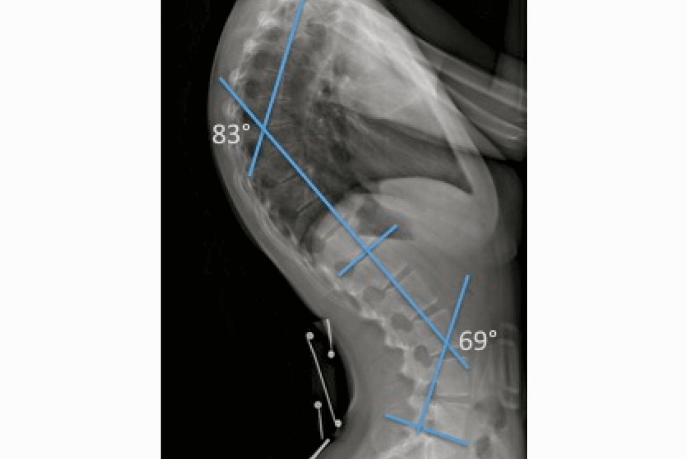
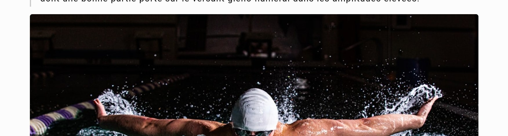
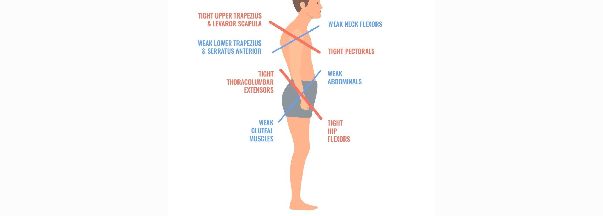

Préambule
En pratique clinique quotidienne, face à une tendinopathie de la coiffe ou un conflit sous-acromial récalcitrant, le regard se porte naturellement sur l'articulation gléno-humérale et la cinématique scapulaire. Pourtant, l'expérience et la littérature nous rappellent qu'une épaule ne peut fonctionner optimalement sur une fondation instable ou rigide.
Trop souvent négligé, le rachis thoracique constitue pourtant la clé de voûte de la chaîne cinétique du membre supérieur. Comment une cyphose, même modérée, peut-elle saboter silencieusement la mécanique de l'épaule et entretenir la pathologie ? Cet article propose une synthèse des interactions biomécaniques entre le rachis dorsal et la ceinture scapulaire, afin de justifier l'impératif d'une prise en charge globale, intégrant la mobilité thoracique comme prérequis à la réhabilitation de l'épaule.
Introduction
Il est intéressant de rappeler que la région thoracique est le principal contributeur à la rotation rachidienne, alors que la flexion/extension y est relativement limitée par la cage thoracique.
L'angle d'une cyphose est mesuré en radiographie de profil à l'aide de la méthode de Cobb sagittale, entre le plateau supérieur de la vertèbre limite supérieure (souvent T1 ou T4) et le plateau inférieur de T12.
Certains protocoles scoliose spécifient une "cyphose thoracique physiologique" entre T1 et T12 avec une norme située entre 35 et 45°. La mesure se fait en position debout ; la position couchée tend à diminuer les angles de Cobb de quelques degrés, ce qui est à rappeler si on compare aux études.
Les courbures rachidiennes
Les courbures du rachis jouent un rôle de « ressort » : elles répartissent les contraintes, amortissent les chocs et conditionnent la mobilité globale. On peut les décrire qualitativement (normales, exagérées, effacées) et aussi en donner des ordres de grandeur angulaires pour la pratique clinique.
1. Courbures physiologiques et amplitudes « normales »
Chez l'adulte, le rachis présente en vue de profil une alternance de cyphoses et de lordoses : cyphose thoracique et sacrée, lordose cervicale et lombaire. En imagerie :
- La lordose cervicale se situe globalement autour de 20–40°.
- La cyphose thoracique autour de 30–45°.
- La lordose lombaire autour de 40–60°. (Avec bien sûr des variations individuelles et méthodologiques.)

Radiographie de profil illustrant la mesure des courbures rachidiennes par la méthode de Cobb — ici avec des angles de 83° et 69°.
2. Courbures exagérées : hypercyphose
Une augmentation de la convexité postérieure définit une hypercyphose, fréquemment décrite à partir d'environ 45–50° de cyphose thoracique, ce qui augmente les contraintes discales.
3. Courbures effacées : rectitude
À l'inverse, un « effacement » correspond à une diminution notable d'une courbure, par exemple une cyphose thoracique inférieure à environ 20°. Courbure nettement réduite en dessous des fourchettes habituelles. En clinique l'effacement des courbures cervicales, dorsales et lombaires réduisent la capacité d'amortissement et favorise une transmission plus directe des contraintes aux disques et aux articulations adjacentes.
Rôle de la cyphose exagérée ou la cyphose marquée et raide sur le complexe de l'épaule
Plusieurs travaux ont montré que la posture thoracique modifie directement la cinématique de la scapula et l'amplitude disponible à l'épaule.
En position "voûtée", l'étude de Kebaetse et collaborateurs met en évidence une diminution notable de l'abduction active et une scapula plus élevée, moins en tilt postérieur, ce qui réduit l'espace sous-acromial et augmente la contrainte sur le complexe gléno-huméral.
Plus récemment, une équipe a montré que limiter l'expansion thoracique au cours d'un rotation externe d'épaule modifie la répartition du mouvement entre scapula et la gléno-humérale, confirmant le rôle du thorax comme base mécanique indispensable au geste de l'épaule.
Chez les patients présentant un syndrome douloureux sous-acromial, plusieurs travaux montrent que la mobilité thoracique est significativement réduite par rapport à des sujets asymptomatiques. Les segments moyens et inférieurs du rachis thoracique (environ T5–T12) semblent particulièrement concernés, ce qui limite la possibilité d'extension thoracique lors des gestes au-dessus de la tête et contribue à majorer les contraintes dans l'outlet sous-acromial.
Au-delà de l'impingement, des études sur des adultes présentant une hypercyphose ont également mis en évidence un ralentissement de la fonction du membre supérieur, ce qui renforce l'idée que le thorax constitue un maillon clé dans la chaîne cinétique de l'épaule.
Impact sur les Amplitudes
- Une posture en cyphose thoracique exagérée (généralement >45-50°) entraîne une perte significative d'amplitudes gléno-humérales, principalement en flexion et abduction (réduction de 15-25° en moyenne selon les études biomécaniques), ainsi qu'en rotations externes, due à l'antéversion scapulaire et à la limitation de la rotation ascendante de la scapula.
- Kebaetse et al. montrent qu'en posture assise « voûtée », l'élévation active dans le plan de la scapula diminue en moyenne d'environ 24° par rapport à une posture assise droite (par ex. 170° → 146°, différence moyenne 23,6° ± 10,7°).
- La même étude relève que cette posture cyphotique s'accompagne d'une scapula plus élevée, plus en rotation interne et moins en tilt postérieur aux hauts angles, ce qui traduit une réduction de la contribution gléno-humérale dans les derniers degrés d'élévation.
- D'autres travaux sur l'alignement sagittal montrent que l'augmentation de la cyphose thoracique et de l'inclinaison antérieure du tronc est un facteur de risque de limitation de flexion et d'abduction d'épaule chez l'adulte d'âge moyen et âgé, indépendant de la douleur. (Imagama et al., 2014)
En pratique clinique, on peut donc retenir qu'une cyphose exagérée (type posture « slouched » ou Cobb T4–T12 > 50°) s'accompagne typiquement d'une perte d'environ 15–25° d'élévation globale, dont une bonne partie porte sur le versant gléno-huméral dans les amplitudes élevées.

Les gestes overhead répétés, comme en natation papillon, sont particulièrement sensibles aux restrictions de mobilité thoracique.
Impact sur la force et la fatigabilité
- La force isométrique des rotateurs externes et des abducteurs diminue d'environ 10-20% en position cyphotique, car la scapula est en abduction (protractée) et élevée raccourcit les fibres des muscles extenseurs thoraciques et allonge les rétracteurs scapulaires, créant un désavantage mécanique.
- De plus, cette posture induit une fatigabilité accrue des stabilisateurs scapulaires et du deltoïde lors de tâches overhead prolongées, avec une activation EMG plus precoce et plus intense pour compenser l'hypomobilité thoracique basse, favorisant ainsi les douleurs et l'épuisement musculaire en fin de geste.
- Dans l'étude de Kebaetse, la force isométrique d'abduction de l'épaule dans le plan de la scapula n'est pas différente entre les postures lorsque le bras est au repos le long du corps, mais elle diminue d'environ 16% lorsque la mesure est faite bras à l'horizontale en posture cyphotique.
- Une étude cas-témoin comparant des sujets avec cyphose marquée à des témoins rapporte également une diminution significative de la force isométrique en abduction et en flexion chez les sujets hypercyphotiques, parallèlement à une réduction de l'abduction gléno-humérale.
(Chez les sujets âgés hypercyphotiques, la fonction du membre supérieur est globalement plus lente et moins endurant (tests d'ADL des membres supérieurs, tests fonctionnels), ce qui reflète une fatigabilité accrue du couple scapulo-thoraco-huméral pour les tâches répétées ou prolongées.)
En Pratique clinique, cela se traduit par une dyskinésie scapulaire visible, un risque accru d'impingement sous-acromial et une endurance réduite du membre supérieur, particulièrement chez les sujets âgés ou les sportifs overhead. Travailler la mobilité thoracique restaure partiellement ces paramètres, confirmant le rôle causal de la cyphose.
Activités musculaire dans la cyphose exagérée
En cyphose thoracique exagérée, plusieurs groupes musculaires travaillent en excès pour compenser la mauvaise orientation scapulo-thoracique et maintenir l'élévation du bras. Les études EMG sur posture « slouched » et sur les syndromes de type upper-cross aident à les identifier.

Schéma du syndrome upper cross : muscles hypertoniques (rouge) versus muscles inhibés (bleu) dans la posture cyphotique.
Muscles hypertoniques
Le Petit Pectoral : Le Vecteur de la Bascule Antérieure
Le petit pectoral est identifié par la littérature comme l'acteur central de la dyskinésie scapulaire liée à l'hypercyphose. S'insérant sur les côtes 3, 4 et 5 et se terminant sur le processus coracoïde, sa position anatomique en fait un puissant abaisseur et basculeur antérieur de la scapula.
Mécanisme Pathologique : L'enroulement des épaules vers l'avant place ce muscle en position raccourcie. Avec le temps, ce raccourcissement devient adaptatif ("adaptively short"), modifiant la structure même du muscle (fibrose, perte de sarcomères en série). Les études cliniques utilisent l'Indice du Petit Pectoral (Pectoralis Minor Index - PMI) pour quantifier ce phénomène. Un PMI faible est directement corrélé à une réduction significative de la bascule postérieure de la scapula lors de l'élévation du bras.
Conséquences Cliniques : La raideur du petit pectoral agit comme une ancre, empêchant la scapula de pivoter vers l'arrière pour dégager l'espace sous-acromial. Cela crée un conflit mécanique direct ('impingement') entre la tête humérale et l'acromion. De plus, sa tension excessive peut comprimer le paquet vasculo-nerveux passant sous le processus coracoïde, mimant des symptômes neurologiques.
Le Trapèze Supérieur : La Compensation par l'Élévation
Le trapèze supérieur est sans doute le muscle le plus critique et le plus systématiquement hyperactif chez les sujets hypercyphotiques. Bien que sa fonction primaire soit l'élévation de la scapula et l'extension cervicale, son hyperactivité est souvent une réponse compensatoire à l'instabilité gléno-humérale et à la faiblesse des stabilisateurs inférieurs.
Dynamique Dysfonctionnelle : Lors de l'abduction du bras, le trapèze supérieur s'active prématurément et avec une intensité excessive. Au lieu de participer à une rotation harmonieuse de la scapula (force couple), il tire l'ensemble de la ceinture scapulaire vers le haut (mouvement de 'shrug'). Cette dominance perturbe le centre de rotation instantané de la scapula, entraînant une translation supérieure excessive de la clavicule.
Lien avec la Douleur Cervicale : L'hypercyphose s'accompagnant souvent d'une projection de la tête en avant, le trapèze supérieur doit fournir un travail constant pour lutter contre la gravité qui attire la tête vers le bas. Cette contraction isométrique permanente conduit à une hypoxie tissulaire locale, à la formation de points gâchettes (trigger points) et à des céphalées de tension référées.
L'Élévateur de la Scapula (Levator Scapulae)
Souvent partenaire du trapèze supérieur dans la dysfonction, l'élévateur de la scapula joue un rôle clé dans la rigidité cervicale. Sa sur-utilisation découle de la nécessité de stabiliser le rachis cervical dans une posture défaillante. De plus, son action de rotation vers le bas de la scapula (downward rotation) s'oppose directement au mouvement nécessaire pour lever le bras (upward rotation), créant un conflit de forces antagonistes qui majore la dépense énergétique et la fatigue musculaire.
Les Rotateurs Internes (Grand Pectoral, Grand Dorsal, Sous-Scapulaire)
L'hypercyphose favorise une position de l'humérus en rotation interne. Les muscles responsables de ce mouvement – le grand pectoral, le grand dorsal et le sous-scapulaire – sont anatomiquement massifs et puissants. Dans cette posture, ils sont placés dans une position de raccourcissement relatif qui favorise leur dominance.
Implications Capsulaires : La dominance chronique de ces rotateurs internes entraîne non seulement un déséquilibre musculaire, mais aussi une rétraction de la capsule antérieure et une raideur de la capsule postérieure de l'épaule. Cela pousse la tête humérale vers l'avant et le haut lors des mouvements, décentrant l'articulation et augmentant les contraintes de cisaillement sur le labrum et les tendons de la coiffe.
Muscles inhibés
La "sous-utilisation" dans le contexte de l'hypercyphose fait référence à une inhibition neurologique et mécanique. Ces muscles, bien que présents, sont incapables d'être recrutés efficacement dans les schémas moteurs fonctionnels, victimes du phénomène de "faiblesse par allongement" (stretch weakness).
Le Trapèze Inférieur : Le Stabilisateur Clé Défaillant
Le trapèze inférieur est sans doute le muscle le plus critique et le plus systématiquement inhibé dans les postures hypercyphotiques. Sa fonction de dépression et de bascule postérieure de la scapula est l'exact contrepoids de l'action délétère du petit pectoral.
Inhibition Mécanique et Neurologique : L'hypercyphose, en projetant la scapula vers l'avant et le haut, étire les fibres du trapèze inférieur au-delà de leur longueur optimale. Simultanément, l'hyperactivité du trapèze supérieur crée une inhibition réciproque puissante. Les études EMG montrent que chez les patients pathologiques, le trapèze inférieur présente une latence d'activation (il s'allume trop tard) et une amplitude réduite, laissant l'épaule sans stabilisation inférieure lors de l'élévation.
Le Dentelé Antérieur (Grand dentelé) : L'Origine de l'Instabilité
Le dentelé antérieur est fondamental pour plaquer la scapula contre le thorax et assurer sa rotation vers le haut (sonnette externe). Bien que l'épaule soit en protraction (action théorique du dentelé), ce muscle est paradoxalement faible et inefficace dans sa fonction de stabilisation dynamique.
Le Paradoxe de la Protraction : La protraction observée est passive (due aux rétractions antérieures) et non active. La faiblesse du dentelé se manifeste par un décollement du bord médial de la scapula (scapula alata), particulièrement visible lors de la phase excentrique du mouvement ou lors de la charge. Cette instabilité prive la coiffe des rotateurs d'une base solide, rendant leur action inefficace.
Les Rhomboïdes et le Trapèze Moyen
Ces muscles sont les rétracteurs purs de la scapula. Dans une posture enroulée, ils subissent un étirement constant ("locked-long"). Leur faiblesse contribue à l'incapacité de maintenir les épaules en arrière, perpétuant le cycle de la cyphose. Bien que moins critiques que le trapèze inférieur pour la bascule postérieure, leur rôle dans la stabilité statique est majeur.
Les Rotateurs Externes (Infra-épineux et Petit Rond)
Les muscles de la coiffe rotateurs sont essentiels pour centrer la tête humérale et freiner la rotation interne. Dans l'hypercyphose, ils sont désavantagés mécaniquement par la position de la scapula (qui modifie leur angle de traction) et inhibés par la dominance des rotateurs internes. Leur faiblesse relative est un facteur de risque majeur pour les lésions de la coiffe, car ils ne peuvent plus contrabalancer les forces ascensionnelles du deltoïde.
Analyse Approfondie des Ratios Musculaires Défaillants
L'évaluation isolée de la force musculaire est insuffisante pour comprendre la dysfonction de l'épaule. La littérature scientifique moderne met l'accent sur les ratios d'activation (coordination intermusculaire) et les ratios de force (équilibre agoniste/antagoniste). Dans l'hypercyphose, trois ratios spécifiques sont systématiquement altérés.
Ratio Trapèze Supérieur / Trapèze Inférieur — indicateur de qualité du mouvement scapulaire
Ratio Trapèze Supérieur / Dentelé Antérieur — responsable de la rotation de la scapula
Ratio Rotateurs Externes / Rotateurs Internes — équilibre de la coiffe des rotateurs
Le Ratio Trapèze Supérieur / Trapèze Inférieur (UT/LT)
Le ratio électromyographique est l'un des indicateurs les plus fiables de la qualité du mouvement scapulaire. Il compare l'activité du compensateur (UT) à celle du stabilisateur (LT).
- Données Normatives et Pathologiques : Dans une épaule saine, ce ratio doit être bas, indiquant une prédominance de l'activité du trapèze inférieur lors de la phase finale de l'élévation pour assurer la bascule postérieure. Chez les patients hypercyphotiques ou souffrant de conflit, ce ratio est excessivement élevé (> 1.0 ou significativement supérieur aux contrôles), signifiant que le trapèze supérieur effectue le travail que le trapèze inférieur devrait faire.
- Implication Clinique : Un ratio UT/LT élevé est synonyme de dyskinésie scapulaire. La rééducation ne doit pas viser à renforcer le trapèze supérieur (déjà hyperactif), mais à maximiser l'activation du LT tout en inhibant l'UT. Les exercices comme le "Prone Y-raise" sont spécifiquement conçus pour optimiser ce ratio.
Le Ratio Trapèze Supérieur / Dentelé Antérieur (UT/SA)
Ce couple de forces est responsable de la rotation vers le haut de la scapula.
- Déséquilibre : Une dominance du trapèze supérieur produisant un ratio UT/SA élevé résulte en un mouvement de 'hausse' plutôt que de rotation. Cela réduit l'espace sous-acromial et augmente le risque de conflit.
- Seuils d'Activation : Les recherches sur les exercices de rééducation, tels que le "Push-up Plus", cherchent à identifier des mouvements produisant un ratio UT/SA faible (< 0.60), garantissant que le dentelé antérieur est le moteur principal du mouvement sans parasitage par le trapèze supérieur. Une activation excessive de l'UT lors d'exercices censés cibler le SA est un signe de contrôle moteur défaillant.
Le Ratio de Force Rotateurs Externes / Rotateurs Internes (ER/IR)
Ce ratio mesure l'équilibre de force (souvent isocinetique ou isométrique) entre les muscles antérieurs et postérieurs de la coiffe.
- Normes Cliniques : La littérature établit qu'un ratio sain se situe généralement entre 0.66 et 0.75 (66% à 75%). Cela signifie que la force des rotateurs externes doit représenter environ deux tiers de celle des rotateurs internes pour assurer une stabilité dynamique.
- Altération Posturale : Dans l'hypercyphose, la facilitation des rotateurs internes (pectoraux, grand dorsal) et l'inhibition des rotateurs externes creusent ce ratio.
- Zone de Danger : Un ratio inférieur à 0.60 est considéré comme un indicateur critique ("red flag") de risque de blessure. En dessous de ce seuil, la coiffe postérieure est incapable de freiner excentriquement le bras lors de mouvements rapides ou de maintenir la tête humérale centrée, exposant l'épaule à l'instabilité et aux lésions tendineuses. Il est intéressant de noter que chez les athlètes de lancer, bien que la force absolue des rotateurs internes soit élevée, le maintien d'un ratio fonctionnel reste impératif pour prévenir les blessures.
Intérêt en Ostéopathie
D'où l'intérêt en Ostéopathie de restaurer la mobilité de la cage thoracique en travaillant sur les différents tissus profonds et superficiels, les articulations du thorax impliquant les différents étages vertébraux, les charnières thoraco-lombaires et cervico-thoraciques, le complexe scapula/clavicule.
Concrètement, tout ce qui améliore la mobilité de la cage thoracique, normalise les charnières C7–T1 et T12-L1 et restaure la cinématique scapulo-thoracique contribuera à réduire ces ratios pathologiques et la fatigabilité/impingement de l'épaule.
Ainsi qu'un programme de rééducation, permettant de diminuer les contraintes posturales en cyphose et de redonner du rôle aux stabilisateurs « sous-recrutés » (serratus anterior, trapèze inférieur, rhomboïdes profonds) plutôt que de renforcer uniquement ce qui est déjà hyperactif.
Conclusion : Vers une synergie thérapeutique
La littérature et la clinique s'accordent : traiter l'épaule sans libérer le thorax revient souvent à lutter contre la mécanique du patient. En tant qu'ostéopathe, mon approche vise à lever ces « freins » articulaires et tissulaires (notamment sur les charnières C7-T1 et T12-L1) pour restaurer une « fenêtre d'opportunité » thérapeutique.
Une fois la mobilité thoracique et l'alignement sagittal optimisés, le travail de renforcement et de reprogrammation neuromusculaire (mené par les kinésithérapeutes et préparateurs physiques) gagne en efficacité et en pérennité.
Vous suivez des patients dont la pathologie d'épaule stagne malgré une rééducation bien conduite ? La composante vertébrale est peut-être le facteur limitant. Je reste à votre entière disposition pour échanger sur ces protocoles de traitement ou pour discuter de la prise en charge conjointe de vos patients présentant des troubles posturaux et scapulaires.
Un problème d'épaule qui stagne ?
En cabinet à Narbonne ou à distance avec MoveCheck, j'évalue votre mobilité thoracique et scapulaire pour identifier les freins mécaniques.